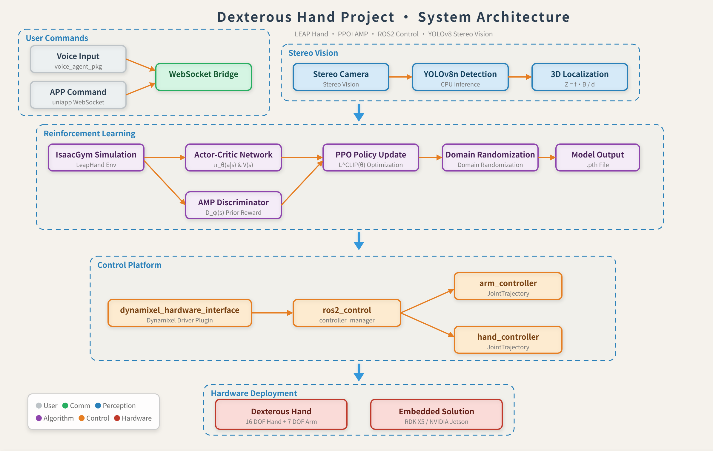
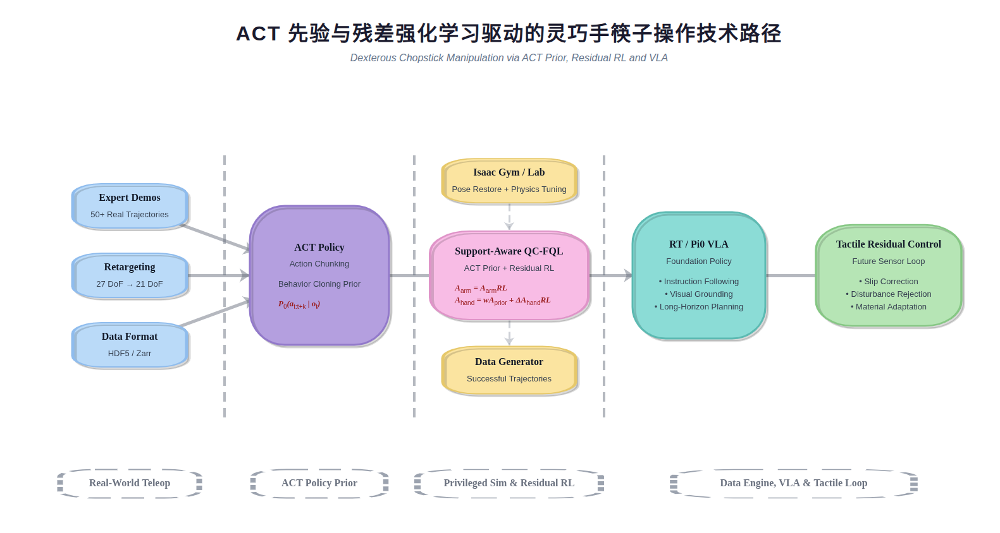

手内旋转
验证多关节协调控制与连续姿态调整能力。
依托 LeapHand 开源机械手，我们完成了灵巧手结构改造、机械臂连接、ROS2 控制与视觉感知系统集成，并在新机械臂平台上实现手内旋转、手势跟随以及瓶子和水果的视觉抓取，建立了稳定的软硬件实验基座。
项目现已完成真机多模态数据采集、27 自由度人手到 21 自由度机器人动作重定向和 ACT 模仿学习训练，形成稳定的筷子操作 demo。当前工作聚焦于将 ACT 动作先验接入强化学习仿真，通过闭环纠错、特权观测与域随机化生成高质量成功轨迹，为后续 π0/VLA 微调提供持续的数据引擎。
SYSTEM FOUNDATION
从感知、重定向到硬件控制，四项真机任务验证了新平台的稳定性与连续操作能力。

验证多关节协调控制与连续姿态调整能力。
验证人手关键点驱动的实时动作重定向与指端对齐。
展示新机械臂平台上的目标定位、接近与稳定抓取。
验证面对不同物体外观与尺度时的视觉抓取能力。
LATEST MILESTONE
已完成真机多模态数据采集、27 自由度人手到 21 自由度机器人的动作重定向与 ACT 策略训练，形成可稳定复现筷子操作的模仿学习 demo。
CURRENT STAGE
当前重点是将真机 ACT 动作先验接入仿真强化学习，通过闭环纠错和物理随机化生成可用于后续 VLA 训练的高质量成功轨迹。
在 Isaac Gym / Isaac Lab 中恢复灵巧手与筷子的真实初始关系，并将位姿及场景参数规范化记录为 JSON。
将已训练 ACT 策略从辅助奖励升级为直接参与 rollout 的 ACT prior，为探索提供高质量热启动。
采用 Support-Aware QC-FQL + ACT prior + residual RL：机械臂由 RL 直接控制，灵巧手执行先验动作与 RL 残差的加权叠加。
利用关节、目标位置及几何关系构建特权观测，并以接近、握持、抬起、移动等阶段信号引导完整任务学习。
围绕质量、摩擦、接触参数与初始状态扩大随机化范围，提高策略面对真实物理差异时的鲁棒性。
目标是在策略收敛后高频生成成功轨迹，持续构建 Robot Transformer 与 VLA 微调所需的数据引擎。
LONG-TERM ROUTE
强化学习专家策略负责扩充可靠轨迹，π0/VLA 负责高层语义理解与跨任务泛化，触觉残差控制负责真机执行时的快速闭环修正。

在域随机化仿真中生成大规模高质量成功轨迹。
学习长视野语义规划、视觉定位与跨场景任务组合。
利用高频触觉反馈处理滑移、扰动和材质差异。
OTHER WORK
我们将机械臂的高层控制接口迁移到基于脑电信号的脑机交互系统。系统通过不同闪烁频率的屏幕目标提供稳态视觉诱发刺激，由脑电帽采集并放大响应信号，再通过模式识别完成指令分类。
视觉刺激不同屏幕闪烁频率诱发可区分的脑电响应。
信号识别脑电帽完成采集与放大，识别模型将信号划分为 10 个类别。
控制映射10 类脑电模式分别对应机械臂的 10 种控制逻辑，用于组合完成操作任务。